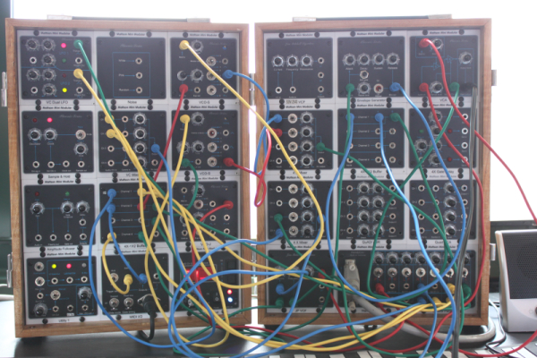
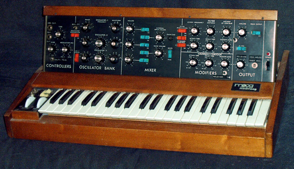

À partir de la seconde moitié des années 1960, Donald Buchla sur la côte ouest, Robert Moog sur la côte est des États-Unis et Paul Ketoff en Italie développent indépendamment le synthétiseur modulaire. Les modules élémentaires constitutifs de ce type d’instrument sont autonomes. Dans ce contexte, le musicien doit préalablement les raccorder pour produire des sons. Cependant, le fonctionnement de ces synthétiseurs n’est pas intuitif. De plus, les premiers modèles sont imposants et donc, il est difficile de les transporter sur scène.

Pour faciliter l’usage du synthétiseur, Robert Moog élabore le synthétiseur Minimoog qu’il commercialise à partir de 1970. Les modules de ce synthétiseur sont précâblés et assemblés dans un objet. Un musicien ne peut pas modifier le câblage entre les modules, mais il peut les contrôler en agissant sur les capteurs (potentiomètres et boutons poussoirs). Sur ce modèle, les sons sont déclenchés à partir d’un clavier de type orgue.

Avec le Minimoog, Robert Moog définit la forme commune du synthétiseur. Mais généralement, ce type de synthétiseur est utilisé pour produire de la musique au tempérament égale. Pour réaliser son album de reprise de la musique de Jean-Sébastien Bach (Switched-On Bach de 1968), Wendy Carlos utilise un synthétiseur modulaire Moog, mais équipé d’un clavier de type orgue. Switched-On Bach est le premier album de musique électronique populaire et il obtient la certification disque de Platine. Selon Trevor Pinch et Frank Trocco, Switched-On Bach a été le « cheval de Troie » des sons électroniques pour atteindre la musique populaire. Après cet album, de nombreux groupes de pop et de rock ont intégré le synthétiseur à leur formation et le Minimoog a facilité cette adoption.
Pour illustrer musicalement ces arrangements de pièces issues du répertoire occidental traditionnel par Wendy Carlos, j’utilise des vidéos qui sont disponibles sur YouTube. Musique pour les funérailles de la reine Marie (Music for the Funeral of Queen Mary) est une œuvre musicale écrite par le compositeur Henry Purcell en 1695.
Pour la bande originale du film Orange mécanique (A Clockwork Orange) de Stanley Kubrick (1971), Wendy Carlos a arrangé et interprété par exemple des œuvres de Ludwig van Beethoven, Gioachino Rossini et notamment la pièce au caractère de marche, issue de Musique pour les funérailles de la reine Marie et composée par Henry Purcell.
Jusqu’à aujourd’hui, toutes les marques produisent des modèles précâblés, équipés d’un clavier et de molettes de modulation. Néanmoins, une communauté de musiciens est fortement attachée aux synthétiseurs modulaires et nombreux d’entre eux n’utilisent pas de clavier pour contrôler leur instrument. Pour démontrer l’attachement de certains musiciens aux synthétiseurs modulaires, j’effectue une digression sur le Hip Hop.
Le courant musical de Hip Hop Boom Bap a émergé au milieu des années 1980 et technologiquement, il se base sur l’échantillonneur de type MPC produit par la compagnie Akai. Le nom Boom Bap provient d’une onomatopée qui représente une percussion à la grosse caisse, suivie par une percussion à la caisse claire : boom, bap ; voire boom, boom, bap. Dans cette catégorie de musique, l’un des maîtres de l’échantillonneur MPC est sûrement J Dilla.
Depuis le début du XXIe siècle, l’engouement pour ce courant musical s’étiole progressivement au profil d’autres courants, notamment pour le courant musical de Hip Hop Trap, puis par le courant Drill. Certes, certaines artistes continuent à produire de la musique Boom Bap, mais d’autres artistes font évoluer ce courant musical. Le courant musical Hip Hop Lo-FI est un exemple d’évolution de la musique Boom Bap, mais pour conclure ce chapitre, je désire m’arrêter sur le courant #MODBAP. Le nom MODBAP a été construit par la contraction et la concaténation des mots modulaire et Boom Bap. Comme vous l’avez compris, les artistes de ce courant musicale interprètent en live de la musique Boom Bap avec des synthétiseurs modulaires.
La synthèse sonore est omniprésente dans le paysage musical actuel. Dans cette introduction, nous avons vu qu’il existe différentes formes pour générer des sons artificiels. Cette profusion des formes complexifie d’autant plus la compréhension de la synthèse sonore. Dans la suite de ces pages, je vais m’efforcer de démystifier le fonctionnement de la synthèse sonore. Pour ce faire, je vais vous présenter les principes fondamentaux de la synthèse sonore. J’accompagne ces explications par des petites applications sonores que vous pourrez manipuler dans votre navigateur web et ainsi, vous pourrez constater auditivement de l’impact d’un paramètre sur le son.